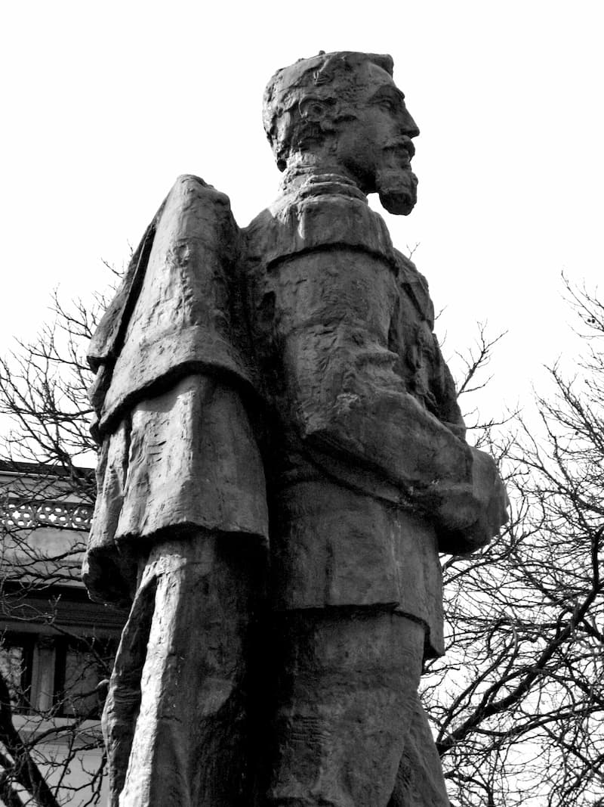
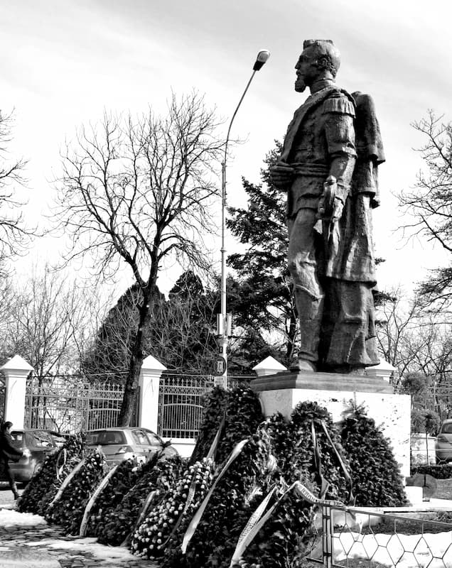

Cuza – C. V.
„Cuza, Alexandru Ioan (1820-1873), domnitor. Prefect de Covurlui, Galați (1857) și ministru de Război (1858). Primul domnitor al Principatelor Unite (1859-1966), ales de Adunările Elective ale Țării Românești și Moldovei ca urmare a sfatului delegației europene, alcătuită numai din masoni și aflată în Principate pentru a supraveghea alegerile. Cuza și-a obligat propria lojă să-și înceteze activitatea, sub pretextul că nu fusese oficializată fondarea sa la București. Pentru a evita luptele intestine, conspiratorii, de comun acord, au decis să ofere coroana română unui prinț străin, și el mason: Carol I de Hohenzollern. Prezent la înmormîntarea lui Cuza, fratele Mihail Kogălniceanu a afirmat că acesta «ținea cheia Orientului și nimic nu se făcea la Orient nu numai fără știrea, dar fără voia lui». Urmașii lui Cuza au fost foarte atenți cu omagierea personalității sale. Astfel, în 1875, au fost aprinse luminile Lojii «Alexandru Ioan I» din București, iar după șapte ani, ale lojii «Cuza Vodă» din Dorohoi. În 1992, Supremul Consiliu al Ordinului Masonic Român (aflat în exil, la Paris) a instituit Medalia de Onoare și Merit «Alexandru Ioan Princeps» (EMD).” Cuza a fost unul dintre înainte-mergătorii Români ai Antihristului. De aceea și Frăția Universală l-a trecut în rîndul „binefăcătorilor omenirii”, prăznuindu-l cu pompă, așa cum a fost în 1970, cînd UNESCO a organizat aniversarea a 150 de ani de la nașterea sa, pentru a-i readuce amintirea „în memoria opiniei publice internaționale”.
Cuza – unificatorul, unirea de la 1859
Unirea Principatelor dunărene a fost hotărîtă în urma războiului Crimeii (1853-1856), ca o mișcare strategică urmărind oprirea ofensivei rusești ce confirma promisiunile țarului (din 1848) de a păzi Ortodoxia în războiul nemilos ce avea să înceapă împotriva ei chiar în chip văzut și pipăit. Iar una dintre pricinile războiului - etapă a nesfîrșitei, pînă în 1918, lupte dintre împărăția pravoslavnică a Rusiei și cea antihristică a Europei - a fost tocmai dorința de stăpînire a Țărilor Românești, ocupate în 1853 de Ruși, care cerea dreptul de a-i apăra pe toți Creștinii din Balcani. „Românii [adică veneticii revoluționari masoni] își puneau nădejdea în Napoleon al III-lea, în război cu Rusia. După război, în conferința de la Viena, se trată întîi asupra organizației viitoare a Principatelor dunărene, a țărilor de compensație. Anglia fu pentru unirea ambelor Țări Românești. Napoleon voia să înlocuiască vechile state prin noi creații politice pe baze naționale. Pentru Napoleon, era o datorie să înființeze la Dunăre bariere veșnice față de preponderența rusească” (IOR1).
Iar ultraliberalii noștri nu oboseau să lucreze cu credință la întemeierea României ca pașalîc al „Franței mesianice” (cum o numea C. A. Rosetti): „Cestiunea noastră se propagă în toate părțile. Napoleon crezu că vom putea să-i dăm ceea ce-i cîntarăm prin toate instrumentele în curs de 3-4 ani, adică o Francie de 10 milioane la Dunăre, care la un răzbel cu Austria și la o-mpărțire a Turciei să-i poată da o oaste de 200 000 de soldați, comandată de generalii lui” (ROS). În 1859, Napoleon al III-a întemeiază colonia „România” și pune în capul trebilor un președinte-guvernator după chipul și asemănarea sa, pe carbonarul „colonel” Alexandru Ioan Cuza, chipeșul veteran de la ’48 - crescut la școala cărvunărească a lui Mazzini, marele tartor francmason continental – probat în alte ascultări mai mici, printre altele pîrcălab și director în Ministerul de Interne. Într-adevăr, Cuza împlinește multe din nălucirile revoluției de la ’48, pe unele chiar cu asupra de măsură, înfigînd în inima Ortodoxiei și totodată în coasta pravoslavnicei împărății Rusești acea republică europeană de care avea nevoie masoneria. Iată cum povestește lucrurile Istoria noastră de a 8-a primară:
„Cuza. A domnit șapte ani, răstimp în care țara a fost înzestrată cu o legislație modernă, europeană” (IST8). La citirea cuvintelor-fetiș – „modern”, „european” – copilul pricepe numaidecît că legile acelea sînt fără îndoială desăvîrșite; de aici, în inima sa se zugrăvește icoana unui legiuitor de poveste, A-L-E-X-A-N-D-R-U I-O-A-N C-U-Z-A, un fel de Moisi cu sabie de paradă, chipiu și bărbiță de țap. Dar - lăsînd la o parte înfățișarea dictatorial-militărească a tragicului comediant – plăsmuită după tiparul tuturor „marilor reformatori” francmasoni, de la Napoleon Bonaparte, Simon Bolivar, Ludovic Napoleon sau samuraii burghezi ai revoluției „Meiji” din Japonia – să adăstăm asupra cîtorva din „legile” acestui mafioso capo di tutii capi1 proslăvit în istoriile noastre:
Între 1859-1862, „Cuza a fost preocupat de desăvîrșirea unirii” (IST8). Așa e! Pînă în 1862, „Domnitorul” „Principatelor Unite”2 se ostenește să plăsmuiască instituțiile „Statului-caracatiță”, adunînd puterea în Muntenia, în cetatea de scăpare a tuturor liftelor balcanice, țigănești și pannoniene; înțelegeți că vorbesc de Bucureștiul împuțit de duhul lumesc european. Astfel se ivește, după planurile urzite la Paris, „statul național România”, de care mult sîntem mîndri noi, măcar că doar cu mîndria demagogică ne mai încălzim, „România” fiind un stat cît se poate de internaționalist și antiromânesc.
„A doua [„etapă” legislativă] începe prin secularizarea averilor mănăstirești (IST8).” Nu cu asta a început, căci nici nu putea. Nu, pentru a izbuti să împlinească poruncile stăpînilor europeni, săturîndu-și totodată nebuneasca trufie și slavă deșartă, în 1863 Cuza face întîi și întîi o mișcare dibace: împinge la conducere un guvern din credincioși de ai săi, în cap cu Mihail Kogălniceanu, haită învechită în rele, și dizolvă Adunarea Legiuitoare (parlamentul „democratic”), apucînd astfel întreaga putere. Prin „lovitura sa de stat”, micul nostru bonaparte bahluiano-dîmbovițean – cu pieptul plin de „stele învăpăiate” (medalii francmasonnice), cîștigate în războiul cu neamul românesc – urma pilda șefului său, zisul „Împărat”(!) Napoleon al III-a (fost președinte al Republicii Franceze de la 1848, pe numele lui de om Ludovic Bonaparte, nepotul „marelui” Napoleon) care și el se auto-întronase la vremea lui împărat cu puteri depline.
Abia după aceea, slobozindu-se de toate frîiele parlamentare, fostul anarhist ajuns acum monarh purcede hotărît la dărîmarea creștinismului moldo-valah, cea mai puternică cetate a Ortodoxiei în acea vreme. Căci Principatele se osebeau de celelalte țări drept-credincioase prin puterea pe care le-o dădea monahismul, așa cum Rusia țarilor se sprijinea pe tăria armatei. Urmarea era că pămîntul (peste un sfert din suprafața întregii țări!) și averile bănești erau în stăpînirea Bisericii și a familiilor boierești, cîte se mai aflau. Unitatea aceasta a trebuit sfărîmată, prin jaf armat și reforme agrare și financiare care să consfințească fărădelegea. Și - pentru început, cum veni la cîrma „Principatelor”, în 1859, în marea grabă ce avea - cărvunarul nostru domnitor își puse voinicii3 de îl călcară chiar pe fostul său tovarăș din partida unionistă, Episcopul Filotei al Buzăului, după cum povestesc cronicarii:
„Filotei era extrem de avar, dar Cuza-Vodă – știindu-l bogat și avînd nevoie de bani spre a face manevre, un fel de demonstrație Austriei – pe cînd era Filotei bolnav, a pus de i-a luat lada cu bani sub ochii săi, și s-au realizat manevrele. Se mai povestește că Vodă-Cuza ar fi pus în vedere zarafului4 din București căruia Filotei îi dăduse vreo 400 de mii de lei pentru a fi dați cu dobîndă, ca să dea statului acești bani, care au fost ridicați prin poruncă domnească” (ION). Odată cu pierderea aurului, nefericitul Filotei își pierde și mințile și apoi damblagește, nemaiavînd de trăit decît un an, prin case de sănătate. Dar episcopul avea bani în multe locuri și alte averi în lucruri și turme de oi, căci fusese harnic în sporirea talantului cel materialnic. De aceea, urmașului său, Dionisie Romano (omul guvernului), „i s-a pus îndatorirea ca împreună cu autoritatea civilă să adune toți banii lui Filotei și să-i dea guvernului, care se găsea în mare lipsă” (ION). Iar mai tîrziu, printr-un proces haiducesc, guvernul avea să pună mîna pînă și pe averea lăsată moștenire de Filoteu prin testament osebitelor așezăminte.
Asta se întîmpla în Muntenia. În Moldova, în același an 1859, „Vodă Cuza, pe motiv de proastă chivernisire, a dispus luarea averilor cîtorva din mănăstirile chinoviale moldovene: Agapia, Adam, Neamț, Secu, Văratec și Vorona. Li s-au luat unele din bunuri, precum și actele și lucrurile privitoare la administrarea bisericească a averilor. Li s-au desființat atelierele, li s-au vîndut vitele, stupii și altele asemenea. Li s-a instituit pe lîngă egumen cîte un comitet administrativ. Li s-au făcut și li s-au trecut în buget state în marginile strictului necesar și li s-au pus proprietățile sub administrarea Ministerului Cultelor. Aceasta reprezenta, desigur, un preludiu al secularizării de mai tîrziu” (ȘER).
„Mai mult, la 10 august, 1860, prin ordonanță domnească s-a desființat mănăstirile Doljești și Zagavia, precum și alte 31 de schituri moldovene. Viețuitorii lor, în parte socotiți că sînt călugăriți «în contra canoanelor», au fost duși în alte chinovii, iar bisericile și acareturile din jur prefăcute în biserici de mir și, respectiv, în «ospicii pentru cerșetori invalizi, în școale sătești sau alte asemenea așezăminte de folos obștesc». Două luni mai tîrziu, Vodă Cuza promulga legea relativă la taxa de transmitere asupra proprietăților așezămintelor publice, prin care se prevedea, printre altele, perceperea pe seama guvernului a unei taxe de 10% pe an asupra venitului net al proprietăților nemișcătoare ale mitropoliilor, episcopiilor, mănăstirilor și bisericilor de sub diferite tutele, al seminariilor, precum și al oricărui alt așezămînt de binefacere.
Tinzîndu-se la desăvîrșita sechestrare a averilor bisericești, administrate de Ministerul Cultelor, al căror venit se aduna la Casa Centrală, în același an 1860, printr-un Jurnal al Consiliului de Miniștri din 19 octombrie, votat de Adunare și întărit de domnitor, Casa Centrală s-a întrunit cu Casa Ministerului de Finanțe, venitul mănăstiresc intrînd astfel direct în vistieria țării” (ȘER).
Într-un sfîrșit, după aceste tîlhării mari și mici, care zdruncinaseră bine Biserica, Vodă Cuza-Biciul lui Dumnezeu se apucă să bată războiul hotărîtor de ștergere a monahismului de pe fața pămîntului românesc și de ateizare a bine-credinciosului norod. Ca să adoarmă orice bănuială, vicleanul apostat își vopsește planul în cele trei culori pe care toți le cunoșteau de-acum pe lume, și-i prostește pe Moldo-Valahi că așa nu mai merge și trebuie pornită cruciada împotriva mănăstirilor închinate Sfîntului Munte Athos, liberînd astfel Biserica și norodul românesc de sub apăsarea Grecilor, care – vorb-aia! – „ne sugeau sîngele”. (Chiar așa făceau, dar asta e altă poveste!) Toată lumea – și ierarhie, și preoțime, și norod – a fost firește orbită de năluca unei asemenea biruințe lumești, și nu numai că a încuviințat desființarea și prădarea de către Stat a mănăstirilor zise „închinate”, dar încă s-a bucurat și a petrecut cu prostească veselie.
Nimeni dintre credincioși nu a cugetat că, pe pămîntul acelor mănăstiri, Românii - tiranisiți cu adevărat de trufașii Grecotei – se osteneau de fapt pentru Dumnezeu și pentru Ortodoxia care trebuia păstrată cu orice preț. Nu, mîndria și dorința de „libertate” a luat tuturor mințile și nu s-au trezit din nebunie – care s-au mai trezit! – decît atunci cînd Cuza le-a dat chiar mai multă „libertate” decît puteau duce. Căci legea „secularizării” mănăstirilor „închinate” - „atît de entuziast votată, decretată și promulgată în decembrie 1863 - prevedea în primul său articol fără nici un echivoc că: «Toate (s. m.) averile monastirești din România sînt și rămîn averi ale Statului.» Se extindea astfel efectul ei și asupra proprietăților mănăstirilor neînchinate și chiar și ale centrelor eparhiale, deși dintru început se vorbise numai de cele ale mănăstirilor zise «închinate»” (ȘER).

Dar lucrurile nu se opresc aici: odată isprăvită cu bine și această trebușoară, procuratorul provinciei Romania Unită S. A. – strîns hățuit și îmboldit cu pintenii de stăpînii Europeni – se apucă să schimbe înseși rînduielile Bisericii „naționale”. Astfel, la „începutul anului 1864, guvernul a vrut să introducă în țară calendarul gregorian” (ȘER). Firește că „mica schimbare” era pusă la cale de papistașii de la Roma, precum zice și cronica:
„În țară s-a produs oarecare neliniște în legătură cu schimbarea calendarului. Se vorbea chiar că puțin înainte de a se ivi ideea introducerii noului calendar, capitala României fusese vizitată de Bore, șeful iezuiților Orientali de la Constantinopol, care ar fi conferit mai multe zile cu oamenii noștri de stat, și că prin urmare guvernul ar fi decis a introduce în România papismul” (ȘER).
Pînă la urmă, nu s-a mai făcut nimic, dar nu din vina lui „Vodă”, ci a împotrivirii Consiliului Bisericesc, a poporului și a Patriarhului Ecumenic. Pentru ca asemenea greșeli să nu se mai întîmple, napoleonul nostru de buzunar se autoîntronizează „papă” al arhiereilor ortodocși, căci, „potrivit Decretului organic din 1864 și Legii pentru numiri din 1865, Prințul domnitor al României avea dreptul de a convoca Sinodul; Ministrul Cultelor participa la lucrările Sinodului, cu drept consultativ; șeful Statului avea dreptul de a numi pe mitropoliții și episcopii țării” (ȘER)5.
Cuza terminase mănăstirile, dar nu și monahismul, care e la drept vorbind liber de toate legile și așezămintele lumești. Pentru a zdrobi viața duhovnicească, el născocește însă alte legi care lovesc de-a dreptul în Taina călugăriei:
„Spre sfîrșitul anului 1864, Vodă Cuza a promulgat Decretul organic pentru regularea schimei monahicești. Acolo se preciza că, pentru a fi călugărit, un bărbat trebuia să dea dovadă de «pietate și vocațiune monahală, prin ispitirea religioasă canonică», să fie în vîrstă de minimum 60 de ani, sau «deși mai june, invalid, om incurabil», și să «renunțe la pensiunea ce ar avea de la Stat». Deosebit de acestea, pentru femei se mai cerea «să nu fie măritată» și să fie în vîrstă de «minimum 50 de ani»” (ȘER).
Cuza a „secularizat” nu numai mănăstirile și averile lor, Biserica și așezămintele ei, ci întreaga viață a Românilor. Așa, într-o nenorocită zi de 1 aprilie a anului 1864, „Cuza a promulgat Legea comunală, iar la 4 decembrie Codicele civil. Prin art. 92 al Legii comunale, s-a luat Bisericii sarcina de a întocmi actele de stare civilă – naștere, căsătorie, deces – pe care o avusese pînă la acea dată, și s-a trecut în seama primarilor comunali, care astfel au devenit și «ofițeri ai stării civile»” (ȘER). Cu alte cuvinte, comisarii Antihristului au ridicat preotului vrednicia de păstor al enoriașilor săi, aceasta trecînd asupra lu’ dom’ primar guvernamental și a cetei sale de tîlhari întărîtați prin telegraf de la „centru”. A fost o nenorocire mai mare decît oricare alta de pînă atunci, căci din acea clipă Ortodoxia a încetat să mai aibă vreo putere în rînduirea vieții obștești și norodul a început să nu mai trăiască de loc creștinește.
Și, pentru ca lucrarea să fie temeinică, polițaiul de la Ruginoasa a mai pușcat niște porunci europene, care ne-au povîrnit de-a binelea în rîpa viețuirii nu doar păgînești, ci și umanist-antihristice. Astfel, a legiuit incestul, curvia și prea-curvia „cu acte în regulă”: „Între prevederile noului Cod civil figurau și unele în care erau «atinse și cestiuni din rezortul bisericesc». În art. 144, de pildă, neținîndu-se seama de deciziile unora din canoane, care îngăduie căsătoria numai după a șaptea spiță de înrudire, s-a legiferat că «în linie colaterală căsătoria este oprită numai pînă la a patra spiță inclusiv»; iar în art. 151, în care se vorbește de «celebrarea» căsătoriei civile, s-a omis cu totul de a se mai prevedea pentru cei ce au convenit șă-și ducă restul vieții împreună și a obligației de a «celebra» și Taina cununiei în cadrul Bisericii. De asemenea, în art. 216 s-a decretat că «despărțirile căsnicești – divorțurile – nu se vor putea face decît numai la tribunalul civil al districtului în care soții își au domiciliul», deși pînă în acest an ele se judecaseră numai la tribunalele bisericești. Aceasta, pe de o parte a dus la desființarea acestora din urmă, iar pe de alta, la trecerea tuturor dosarelor căsnicești al tribunalele civile județene. În sfîrșit, el a dus și la pronunțarea despărțirii numai înaintea tribunalelor civile, «fără ca Biserica să mai fie încunoștiințată de aceasta»” (ȘER).6
Descreieratul legiuitor nu i-a lăsat în pace nici pe morții noștri. Mai întîi, i-a izgonit afară din sate și din orașe: „Prin Legea pentru înmormîntări, din martie 1864, s-a pus îndatorire tuturor „culturilor” de a-și întocmi cimitiruri pentru înmormîntare la cel puțin 200 de metri de așezări” (ȘER). Ce rost avea atîta nebunie? Păi avea! Întîi că erau prea multe cruci la vedere, și asta tulbura rău duhurile vremurilor noi. Al doilea, unde sînt cruci, sînt neîncetat parastase, Românii vii avînd grijă de sufletul celor duși mai mult decît de al lor propriu. În fine, cu atîtea slujbe de înmormîntare și de pomenire, norodul era – vrînd-nevrînd – mai tot timpul cu inima la cele veșnice, fiind greu de ispitit de năluca raiului progresist.7 Dar nici asta nu e tot! Cimitirele celor ce așteaptă învierea nu trebuiau doar îndepărtate din priveliște, dar și spurcate de duhurile necurate care îi însoțesc în moarte pe necredincioși: „Mai departe, legea îngăduia ca în cimitirele creștine să se poată înmormînta și acei morți de alte religiuni pentru care nu vor fi cimitiruri speciale” (ȘER).8
Trăgînd încheierea, băgăm de seamă că toate aceste „legi” n-au însemnat altceva decît consfințirea spurcatelor „taine” ale cultului umanist ateu – „botezul” laic, căsătoria „civilă”, îngropăciunea cîinească, adăugînd și „taina” divorțului – în care cetățeanul-preot/cetățeana-preoteasă! al/a religiei Rațiunii, încins/ă cu eșarfa revoluționară tricoloră, săvîrșește legări și dezlegări duhovnicesc-drăcești în numele Statului, adică al omului-dumnezeu!
Cuza - „iluminat” și „luminător”
Cuza a fost primul mare „iluminat” și „luminător” de la noi căruia i s-a dat în sarcină scoaterea bietului norod Moldo-Valah din „beznele” Ortodoxiei și alinierea lui în marșul universal către strălucirile „progresului”. Pentru asta, el a pus neasemuită rîvnă în ctitorirea învățămîntului ateu românesc. Cum zice o Istorie de a 4-a, „Domnitorul Al. I. Cuza a despărțit învățămîntul de biserică” (IST4). Ceea ce vrea să spună că onorabilul nostru fost colonel și ministru de interne a ridicat Bisericii dreptul de a-i educa pe copii Români botezați, dărîmînd învățămîntul creștinesc și înființîndu-l pe acela zis „laic” (=ateu), adică școala antihristică, organ al Statului antihristic! Atunci, s-a petrecut ceva cumplit: întreaga așezare firească a obștii românești s-a prăbușit în clipa cînd preotul a fost despuiat de vrednicia dăscălească, ce a fost dată umaniștilor mercenari ai minciunii, și cînd însăși preoția a fost trecută între îndeletnicirile funcționărești ale Ministerului Instrucțiunii și Cultelor9.

Pentru a-și săvîrși misia, Cuza nu a stat deloc pe gînduri, și încă „în 1859, la 15 decembrie, a desființat școlile catehetice din Moldova, pe care le-a schimbat în școli primare. Ceva mai tîrziu, seminariile au fost luate sub conducerea directă a Ministerului Instrucțiunii, care n-a întîrziat a le aduce reforme și a le reorganiza” (ȘER). Aceasta vrea să zică ateizarea lor, preschimbarea lor în laboratoare ale necredinței. Așa că mai bine ar fi să spunem că „prințul” a fost înscăunat ca tiran al României întregi pentru a-i despărți pe Români de Biserică și Biserica de Ortodoxie, trecîndu-i și pe unii, și pe cealaltă sub ascultarea Statului revoluționar francmasonic.
Apoi, cum citim în alt manual de istorie, „prima lege școlară a statului român a fost legea lui Cuza din 1864, care organiza desfășurarea învățămîntului de toate gradele. Învățămîntul primar era decretat obligatoriu și gratuit, avînd în vedere nivelului extrem de scăzut al instrucției populației rurale” (IST8). Aici, atingem un capitol de cea mai mare însemnătate în istoria revoluției românești, care a urmărit pe de o parte ispitirea norodului către păgînism și apostazie, iar pe de alta, umanizarea ortodoxiei noastre, adică schimbarea ei în filosofie a Antihristului. În alte cuvinte; masonizarea Românilor a mers împreună cu masonizarea Bisericii: saducheii și fariseii și-au dat mîna cu arhiereii și au purces la desăvîrșirea lucrării „iluministe” în România! Legea instrucțiunii publice a lui Cuza a arătat toate acestea deslușit, punerea ei în aplicare făcîndu-se prin Biserică, instituție de căpetenie a guvernului luptător de Hristos! De fapt, dacă schimbările nu ar fi venit prin Biserică, norodul - prost (adică simplu), dar sănătos la minte - nu ar fi primit să își ridice „nivelului extrem de scăzut al instrucției” nici cu un milimetru măcar. De aceea, prin condeiul nefericitului V. A. Urechia, Ministerul îi scria Mitropolitului Nifon o „adresă” (un ordin deci), frățesc-masonică, umanist-apocaliptică și demagogic-patriotică: „În ziua de 1 septembrie intră în lucrare noua lege școlară cu marele principiu al obligațiunii instrucțiunii primare. Punem acest principiu mîntuitor sub adumbrirea Bisericii strămoșești. Ardicați, Preasfinte, vocea amvonei pentru esplicarea lui! Puneți a se face rugăciuni pentru prosperitatea instrucțiunii publice, ordinați clerului să îndemne pe săteni, mai ales, a-și trimite copiii la școală, căci gloria religiei va sta în isbînda luminii, și salvarea patriei române nu este decît cu această condițiune. Școalele din trecut se țineau în pridvoarele bisericilor noastre. Faceți dară, Preasfinte, prin influența salutarie ce vă dă sfînta noastră religie, ca și pe viitor școala să fie pridvorul Biserici Române și ambele intrarea sigură la templul [!] binelui, al adevărului, al frumosului și al românismului” (ȘER).
Dacă n-ar fi adevărat, acest poem omagial al silniciei pedagogice ar fi de rîs! Cînd însă citești că școala și Biserica au ca scop și sarcină să ne ducă vrînd-nevrînd în templul ideal și universal al lui Lucifer, îți îngheață zîmbetul în rînjet.
BIBLIOGRAFIE:
(EMD) - EMILIAN M. DOBRESCU, Iluștri francmasoni, Nemira, 1999
(IST4) - ISTORIA ROMÂNILOR, manual pentru clasa a 4-a, Sigma, 1997
(ȘER) - PREOT NICOLAE ȘERBĂNESCU, Aniversări-comemorări, 150 de ani de la nașterea lui Alexandru Ioan Cuza: 1820, 20 martie, 1970
(IST8) - ISTORIE, manual pentru clasa a 8-a, Humanitas, 2000
(ROS) – Rosetti, C.A., Corespondență, Minerva, 1980
(ION) – GHEORGHE IONESCU (BUZĂU), Viața și activitatea lui Filotei, Episcopul Buzăului, București, Tipografia „Gutemberg” Joseph Gobl, 1909
(IOR I) – Iorga Nicolae, Istoria poporului românesc, ED. Științifică și pedagogică, 1984
Note
1 Era și oleacă italian.
2 Măcar că nu îmi plac de fel, sînt silit să presar peste ghiveciul acestei scrieri un praf des de ghilimele, căci așa cere istoria masonică, lucrarea satanicească de amăgire și înșelare ai cărei oameni și fapte nu sînt niciodată ceea ce par a fi.
3 „Voinic” înseamnă „haiduc”, hoț de codru.
4 Iuda nu poate lipsi din nici o blestemăție, se înțelege.
5 Această legiuire a nelegiuirii era uneltită pentru viitor. Căci, fiind silit a sugruma slabele împotriviri ale ierarhiei, tiranul n-a așteptat nici o lege. luîndu-și dintr-o dată toate drepturile. Asfel, încă din primul an al domniei sale, Cuza l-a suspendat pe Mitropolitul Sofronie Miclescu al Moldovei care se jeluise împotriva jafurilor stăpînirii.
Și încă ceva: o lege asemănătoare e în putere și acum: președintele republicii avînd dreptul să-l demită pe Patriarhul României și să numească altul pe placul său.
6 Urmările acestor blestemății înfricoșătoare, înainte-văzute de diavol și de împreună lucrătorii săi, se văd în zilele noastre, degenerarea neamului românesc fiind pricinuită de nenumăratele împreunări nelegiuite între rude trupești (adică între veri, ca să nu mai spunem că și duhovnicești, adică între nași și fini), între oamenii necununați sau divorțați.
7 În Occident este oprită pînă și purtarea mortului prin oraș, nu în mașină descoperită, ca la noi, ci chiar în dubă, dacă are însemne „funebre”! Căci, dacă își aduce aminte cetățeanul că e muritor, nu se sfărîmă bunătate de amăgire umanistă? Nicicum nu le place ateilor să le aduci aminte de moarte, bănuind ei cumva că e totuși cu putință să mai fie și un „dincolo”, unde nu se știe peste ce lucruri neplăcute mai dai.
8 Se întemeia atunci mișcarea ecumenistă a morților din România!
9 După ce li s-a luat și putința de a-și păstori turma - nemaiavînd dreptul de a ține catastiful „civil” al nașterilor, căsătoriilor și morților - preoții lui Hristos au fost micșorați pînă la statura unor „prestatori de servicii” liturgice.
Comentarii